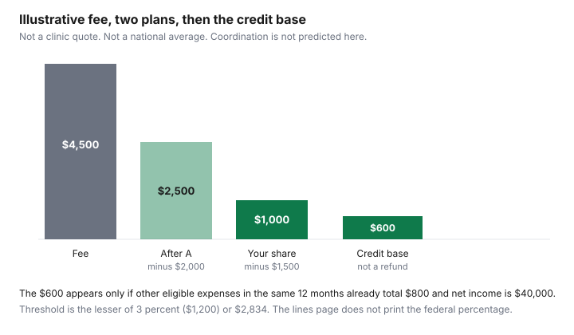

Healthcare · Canada
Braces for Kids in Canada: Orthodontic Costs, Benefit Lifetime Maximums, and Payment Plans
A braces quote is a multi-year bill sitting on top of one or two workplace dental contracts. The useful number is not a national average. No page from the Canadian Association of Orthodontists opened for this draft printed one, so a range parents often hear is left out. The useful number is the lifetime orthodontic maximum on each plan, the order the plans pay, and the medical expense tax credit on what is still yours. This page is that sequence. It is not orthodontic advice and not tax advice. The orthodontist decides the appliance. The contract decides the maximum. The Canada Revenue Agency decides the credit when you file.
Key takeaways
- No verified Canadian fee for braces or clear aligners was opened. Compare case type, what the fee includes, and the length of treatment, not a headline price.
- An orthodontic lifetime maximum is a contract cap. It often does not reset each benefit year. Read both parents' booklets before you start.
- Coordination, including the birthday rule, is on the two-plan guide. Do not assume the second plan pays whatever the first plan leaves.
- A payment plan is interest-free only when the terms say so. A third-party lender is a credit contract. Read the cost of stopping treatment early.
- For 2025, orthodontic work is an eligible medical expense. The federal threshold is the lesser of 3 percent of net income or $2,834. The lines page does not print a credit percentage, so no refund is calculated here.
What drives orthodontic cost: case complexity, appliance type and treatment length
Offices price a case, not a product on a shelf. A short treatment on a mild alignment is a different fee from a long treatment with extractions, appliances, and many adjustment visits. Clear aligners and braces are different appliances. This page does not say one costs less. No paired fee was opened. Ask the consult to name the appliance, the estimated months, what happens if months run long, and which records, retainers, and emergency visits are inside the fee.
The Canadian Dental Care Plan is not the first place to send a routine braces quote. The Dental Benefits Guide, page details 31 March 2026, says a specified range of limited orthodontic services can be requested at a date to be determined, that preauthorization will be required, and that the criteria it describes are narrow: children under 18 with a severe and functionally handicapping malocclusion under the index the guide names, and adults with a craniofacial anomaly such as cleft lip and palate. That is not a general children's braces benefit. The CDCP bill guide is for covered services and extra charges. Parents with workplace dental coverage should start with those booklets.
Get the fee in writing before you compare offices. The dental quote guide is the habit of matching procedure codes. Orthodontic contracts are often one treatment fee rather than a code per visit. Ask the office to say so, and to say whether retainers after the braces come off are a second fee. Two quotes that include different retainers are not the same quote.
Orthodontic lifetime maximums and coordinating both parents' plans
Open both benefit booklets and find the orthodontic section, not the annual dental maximum for cleanings and fillings. Many contracts set a lifetime maximum for orthodontics for each covered person. Some share that maximum with other major services. Some pay a percentage of the eligible fee up to the maximum, and some pay a fixed amount per year until the lifetime cap is gone. The only maximum that matters is the one printed for your plan. This article does not substitute an illustrative cap for that sentence in your booklet.
If the child is a dependent on two plans, the plans coordinate. Who pays first is a rule in the contracts. When the birthday rule applies, it is explained on the coordination guide, and it is not repeated here. After the first plan pays, the second plan looks at its own orthodontic maximum, its own percentage, and what the first plan already paid. A lifetime maximum of one plan is not a cheque for that amount on day one, and it is not a promise that the other plan fills the gap. Ask each insurer for a pre-determination: the fee, the codes or the treatment description, and what that plan will pay this year and over the life of the case.
Changing jobs can reset or abandon a maximum. Ask whether the unused lifetime amount follows you, and whether treatment already underway is still eligible at the new insurer. A health spending account is a different bucket. The workplace benefits guide is where election rules live. Do not assume an HSA pays orthodontics. Read the eligible-expense list for that account.
In-house payment plans vs third-party financing: read the terms
An in-house plan is the office letting you pay the balance over the months of treatment. Ask whether those payments include interest, an administration fee, or a discount for paying the fee at the start. Ask what happens to the balance if you move, if the orthodontist stops the case, or if you miss a withdrawal. A schedule that looks interest-free can still charge a fee to restart a missed payment. Get that in the same document as the treatment fee.
A third-party plan is a loan or a credit agreement with a finance company. The office is paid sooner. You owe the lender. Read the interest rate, the term, and the total you will have paid when the last instalment clears. A zero-interest offer that becomes a high rate after a missed payment is still a credit contract. This page did not open a lender's schedule, so it does not name a rate. If you would not sign the contract for a similar purchase, do not sign it because the letterhead is a dental office.
Match the payment schedule to the insurance payments. If the first plan pays monthly as treatment proceeds, and the office wants the full fee in three months, you are financing the insurer's delay. Ask the office to bill the plans directly and to set your payments on the balance after the pre-determinations. The sinking-fund guide is a way to park the balance you know is coming, if you would rather not borrow. It is a household tool, not a dental product.
Timing treatment around benefit years and deductibles
A lifetime maximum does not care which month you start, except that some plans also have a yearly maximum or a deductible that does. If orthodontics is subject to the dental deductible, starting in December can mean two deductibles close together, one in each benefit year, for the same case. Ask whether the deductible applies to orthodontics and when the benefit year turns. It is not always 1 January.
If the plan pays a percentage each year up to an annual orthodontic cap, as well as a lifetime cap, the start month decides how many plan-years the case touches. A 24-month treatment that starts in January can sit in three calendar years. The same treatment starting in November can sit in three years as well, with a thin first year. Ask the insurer how it assigns a monthly treatment fee to a benefit year. Then ask the office whether records and the initial appliance are billed on the start date in one lump. That lump can use up an annual cap in a single claim.
Do not start a case in the last weeks of a job if the plan will end. A pre-determination from an insurer you are about to leave is not coverage after the last day. Confirm the last date of dental coverage in writing. The second parent's plan may become primary the next day, with its own deductible and its own lifetime maximum still intact or already partly used by earlier treatment.
Claiming orthodontics on the medical expense tax credit
Guide RC4065 for 2025 lists orthodontic work, including braces, paid to a medical practitioner or a dentist. Purely cosmetic procedures are not eligible. The lines for 33099 and 33199 say you claim eligible expenses paid in any 12-month period ending in 2025 that you did not claim for 2024. On line 33099, for yourself, your spouse, and your children under 18 at the end of the year, you subtract the lesser of 3 percent of your net income on line 23600 or $2,834. The medical expense guide works that threshold. The lines page does not state a federal credit percentage. This article does not invent one, so the chart's last step is the amount the credit is calculated on, not a refund.
Claim the amount you paid, not the amount the orthodontist billed the insurer. If a plan reimburses you later, you cannot claim that reimbursed portion again. A payment plan does not change the rule: the CRA page speaks to amounts paid in the 12-month period. A contract that says you owe the full fee on day one is not the same as having paid it. Keep the receipts that show dates of payment.
The illustrative case below is a worksheet, not a finding about Canadian fees. Fee $4,500. Plan A pays an illustrative $2,000 of its lifetime maximum. Plan B pays an illustrative $1,500 of what remains. Your share is $1,000. If that $1,000 is the only eligible expense and net income is an illustrative $40,000, 3 percent is $1,200, which is less than $2,834, so the threshold is $1,200 and the $1,000 produces no federal credit. If other eligible expenses in the same 12 months are an illustrative $800, the total is $1,800, and $1,800 minus $1,200 is $600. That $600 is what the credit calculation uses. It is not $600 off your tax bill.
| Layer | Illustrative amount | What it is |
|---|---|---|
| Treatment fee | $4,500 | A worksheet number. Not a verified Canadian fee. The unverified $6,000 to $8,000 range is omitted. |
| Plan A | $2,000 | An illustrative slice of a lifetime maximum. Your booklet has the real cap and the percentage. |
| Plan B | $1,500 | An illustrative amount after plan A. Coordination may pay less. See the two-plan guide. |
| Your share | $1,000 | $4,500 minus $2,000 minus $1,500. |
| 2025 threshold at $40,000 net income | $1,200 | 3 percent of $40,000 is $1,200, which is less than $2,834. |
| Amount the credit uses, if other expenses are $800 | $600 | $1,000 plus $800, minus $1,200. Not a refund. The federal percentage was not on the lines page. |
| Ask | Write down |
|---|---|
| What is included in the fee? | Records, appliance, adjustments, retainers, and the estimated months. |
| What is each plan's orthodontic lifetime maximum, and how much is already used? | The booklet figure and the insurer's pre-determination, per parent. |
| Which plan pays first? | The coordination answer, not a guess. Use the two-plan guide for the birthday rule. |
| Does a deductible or an annual cap also apply? | The benefit-year date, and whether the initial appliance is one lump claim. |
| Is the office plan interest-free, and what does a missed payment cost? | The clause, or the lender's rate and total repayment. |
| What will I have paid, in dates, for the tax credit? | Receipts in one 12-month period, after plan payments. |

Second opinions, phased treatment and what to ask at the consult
A second opinion is a second examination, and it may be a second record fee. Ask the first office whether records can be shared, and ask the second office what it charges to review them. You are comparing the appliance, the months, and the fee, not collecting a vote. If the plans differ, ask each insurer whether a second consult is eligible or whether it spends the lifetime maximum. Diagnostic visits sometimes sit in a different part of the dental contract from active treatment.
Phased treatment means doing part of the work now and part later. It can fit a lifetime maximum that will not cover the full fee this year, and it can be a clinical plan the orthodontist recommends for a growing child. Those are different reasons. Ask the orthodontist what changes if you wait, in clinical terms, and ask the insurer whether a later phase is a new lifetime maximum or the rest of the same one. A phase that starts after a job change may have no plan at all.
Leave the consult with the fee, the included retainers, both pre-determinations, and the payment-plan terms. If any of those is missing, you do not yet know the household cost. The credit, if the receipts clear the threshold, comes the year you file. It does not reduce the monthly withdrawal. Confirm the orthodontist's registration with the provincial dental regulator if you want to check the name. This page does not rank offices.
Sources & date stamps
- CRA, lines 33099 and 33199, and guide RC4065 (2025): orthodontic work including braces is eligible; purely cosmetic procedures are not; subtract the lesser of $2,834 or 3 percent of line 23600. The lines page does not print a federal credit percentage. Checked 27 Sep 2026. Not tax advice.
- Canadian Dental Care Plan Dental Benefits Guide, page details 31 March 2026: limited orthodontic services at a date to be determined, with preauthorization and stated clinical criteria. Not a general braces benefit.
- Coordination of two plans, including the birthday rule, is left to the workplace-benefits article already on this site. No insurer booklet was opened, so no sample lifetime maximum is printed.
- Dropped: any $6,000 to $8,000 braces range, because no dated source opened for this draft printed it. The $4,500 fee in the table is illustrative arithmetic.
Frequently asked questions
How much do braces cost in Canada?
No Canadian Association of Orthodontists page opened for this draft printed a national fee, and a range sometimes quoted to parents was not on a source opened here, so it is not repeated. The fee depends on the case, the appliance, and how long treatment runs. Ask each office for a written fee that states what is included. The illustrative $4,500 in the chart is arithmetic for a worksheet. It is not a quote and not an average.
What is an orthodontic lifetime maximum?
It is the cap in your workplace dental contract on orthodontic services, often for the life of the person being treated, not a reset every January. The dollar is whatever your booklet prints. This page does not use a typical maximum, because none was opened. Ask whether the maximum is per person, whether it is shared with other major dental work, and what happens if you change employers.
Can both parents' plans pay for braces?
Often yes, if both plans cover orthodontics and the child is a dependent on both. The order is the coordination rule in the contracts, including the birthday rule when it applies. That rule is explained on the two-plan guide and is not re-taught here. One plan paying its lifetime maximum does not mean the second plan pays the rest. Ask each insurer what it will pay after the other plan.
Are orthodontist payment plans interest-free?
Only if the written terms say so. An in-house schedule can be a set of post-dated payments with no interest, or it can hide an administration fee. A third-party finance contract can charge interest. Read the annual percentage, the fee if you miss a payment, and whether you still owe the full fee if treatment stops. This page did not open a contract that is interest-free for every Canadian office.
Can braces be claimed on taxes?
Orthodontic work, including braces, paid to a medical practitioner or a dentist is on the Canada Revenue Agency list for 2025. Purely cosmetic procedures are not. Claim the amount you paid and that no plan repaid, above the lesser of 3 percent of net income or $2,834. The lines page opened for this draft does not print the federal credit percentage, so this guide does not turn the excess into a refund. This is not tax advice.
Researched and drafted with AI assistance and fact-checked against official Canadian sources. How we create content.